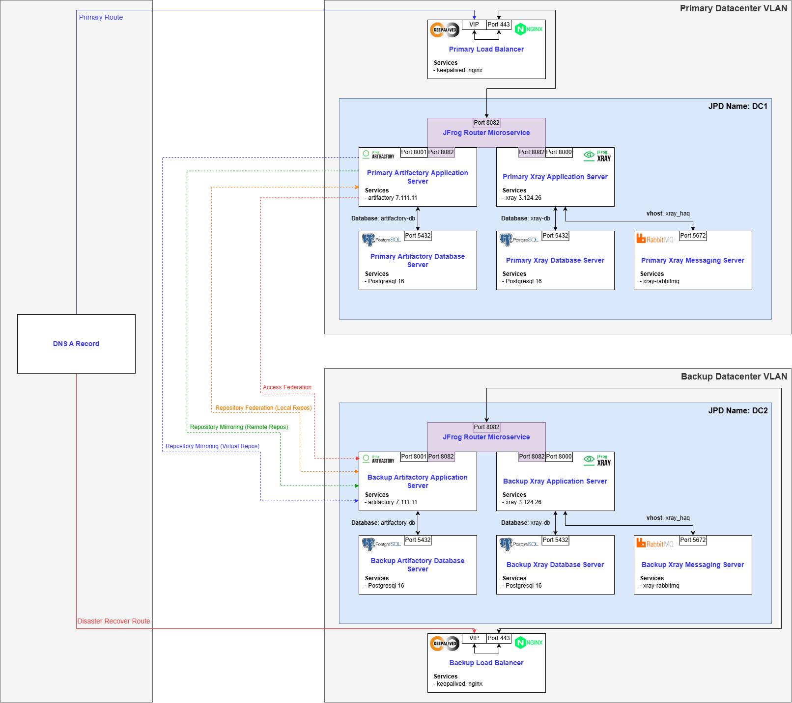

Overview
Designed and implemented an enterprise-grade JFrog Artifactory platform to serve as the centralized artifact management solution across multiple environments, including regulated environments. The platform enabled secure, scalable storage and distribution of build artifacts, while supporting federated replication, repository standardization, and integration with CI/CD pipelines.
The solution established Artifactory as a single source of truth for binaries and dependencies, supporting both internal development workflows and external dependency management through a combination of remote, virtual, and federated repositories.
The platform supported enterprise-scale usage across multiple teams and CI/CD pipelines, handling high volumes of artifact storage, retrieval, and synchronization across environments.
Key Highlights
- Designed and deployed a multi-environment Artifactory platform with consistent architecture and configuration
- Implemented repository strategy leveraging remote, virtual, and federated repositories
- Implemented federated replication for cross-site synchronization and disaster recovery between environments
- Established Artifactory as the centralized artifact repository for CI/CD pipelines and enterprise builds
- Integrated Artifactory with authentication, access control, and API-driven workflows
- Optimized logging and log rotation strategies to prevent disk exhaustion in high-volume environments
- Supported scalable architecture with separation of application and PostgreSQL database layers
Architecture Diagram

Click diagram to enlarge.
Architecture Explanation
The Artifactory platform was deployed using a multi-environment architecture, with dedicated clusters for test, production, and PCI-compliant workloads. Each environment consisted of an application server and a PostgreSQL backend, with disaster recovery enabled through federated replication between replicated environments.
Repository design followed a layered approach, combining federated repositories for internally produced artifacts, remote repositories for external dependency caching, and virtual repositories to provide unified access endpoints. Federated repositories were used as the primary mechanism for artifact storage to ensure cross-site synchronization and disaster recovery, eliminating reliance on single-node repository storage.
The platform leveraged JFrog’s microservices architecture, including services for access control, metadata management, event processing, and observability, enabling modular scaling and operational visibility across the system.
Challenges and Solutions
-
Problem: High artifact synchronization volume created excessive logging and storage pressure
Solution: Tuned application logging and retention behavior to reduce unnecessary log volume -
Problem: Conflicting log rotation mechanisms (system logrotate vs application-level rotation) causing file duplication and storage inefficiencies
Solution: Standardized on a single log rotation strategy and removed overlapping cron-based rotation to eliminate duplication and ensure predictable log lifecycle management -
Problem: Need for secure artifact separation between standard and PCI environments while maintaining synchronization
Solution: Implemented federated repositories to replicate artifacts across environments while maintaining logical isolation and compliance boundaries -
Problem: Inconsistent artifact access patterns across teams and pipelines
Solution: Introduced virtual repositories to provide unified access endpoints and simplify dependency resolution for developers and CI/CD systems
Outcome
Delivered a centralized, scalable artifact management platform that standardized how binaries and dependencies are stored, accessed, and distributed across the organization. The implementation improved build reliability, reduced external dependency risk through caching, and enabled consistent artifact promotion workflows across environments.
Operational stability was significantly improved through logging optimizations and controlled resource usage, preventing disk-related outages in high-throughput environments. The platform also established a foundation for integrating security scanning and compliance workflows through downstream tools such as JFrog Xray.
This implementation improved developer efficiency, reduced build failures caused by external dependency issues, and established a scalable foundation for secure software supply chain management across the organization.